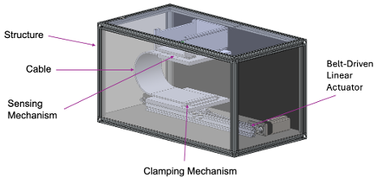
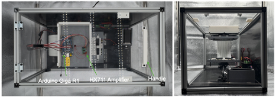
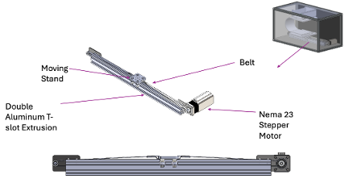
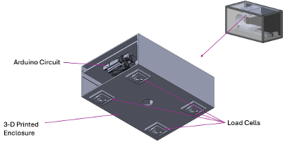
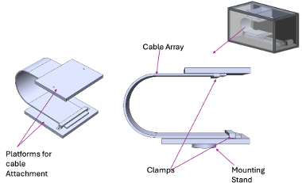
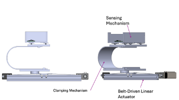
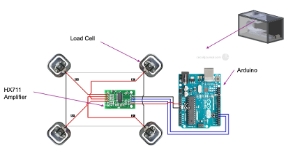
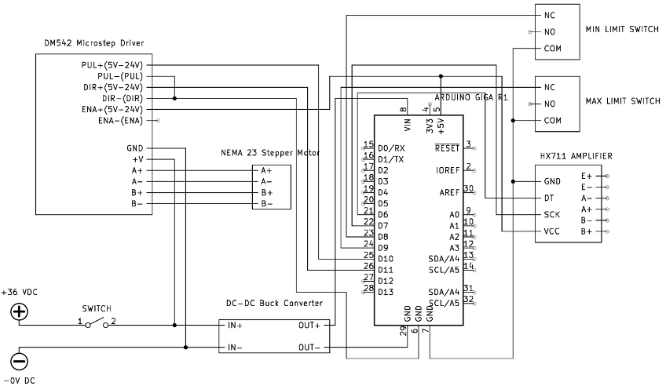

Analysis of Design
Here we can see the final manufactured dynamic test fixture in its fully assembled state. This front view introduces the complete system and offers a clear look at the integration of all major mechanical and electrical components. The test fixture is built around a rigid aluminum extrusion frame and enclosed with a combination of HDPE and clear acrylic panels for protection and accessibility. Inside the enclosure, the ASML cable is mounted between two clamping platforms — one fixed at the top and the other attached to the moving stand, which is driven by a belt and pulley system connected to a NEMA 23 stepper motor. A double aluminum T-extrusion serves as the base for the actuator and guide rail system, enabling smooth and controlled motion. Load cells mounted at the top capture the force exerted by the cable, while an HX711 amplifier and Arduino Giga R1 handle data acquisition and system control. All components are strategically arranged to maintain a compact footprint while meeting the functional requirements of precise force measurement and repeatable motion cycles.
These views show the test fixture from the top and side. Key electrical components are visible from the top, including the Arduino Giga R1 and HX711 amplifier, while the side view highlights the vertical structure and internal arrangement.
Structure

The structural subassembly consists of aluminum extrusion profiles that form the primary frame of the test fixture, providing strength, rigidity, and modularity. High-density polyethylene (HDPE) plates are installed along the back and bottom surfaces to provide visual contrast for observation and improved background uniformity during testing. Clear acrylic sheets are mounted on the top and sides of the structure to allow visibility of internal components while serving as protective barriers to ensure user safety during motion cycles. The front of the fixture remains open to facilitate easy access for cable installation, adjustment, and maintenance.
Belt-Driven Linear Actuator
The belt-driven linear actuator serves as the main motion mechanism in the test fixture, enabling precise horizontal displacement. It features a closed-loop timing belt driven by a stepper motor and tensioned around pulleys at both ends. Attached to the belt is the moving stand, which holds the lower cable clamp and travels smoothly along the linear path. The entire assembly is mounted onto a double aluminum extrusion, which integrates both the belt track and guide rail system into one structural unit. This configuration ensures compactness, high-speed motion, and reliable alignment over the full 300 mm travel range.
Sensing Mechanism
The sensing mechanism includes a load cell mounted on the top plate to detect the force applied by the cable. An HX711 amplifier interfaces the load cell with an Arduino microcontroller, which handles both data acquisition and full system control, including motor operation and calibration routines. All components are enclosed within protective housing to ensure organization, safety, and ease of access during testing and troubleshooting.
Clamping Mechanism
The clamping mechanism consists of custom clamps mounted onto dedicated platforms that serve as attachment points for the cable ends. One platform is fixed at the top of the structure, while the other is mounted on a stand secured to the moving base of the belt-driven linear actuator. These platforms ensure proper alignment and spacing of the cable while the clamps maintain a secure grip during motion. This configuration supports the required fixed-fixed boundary condition necessary for consistent and accurate testing.
Test Fixture Without Enclosure
Here we can see the test fixture without the enclosure. Visible components include the clamping mechanism, the belt-driven linear actuator, and the sensing mechanism.
System Circuit Diagrams and Wiring Configuration
Figure 22 above shows the circuit used to read force data from the load cells. Four load cells are connected in a full Wheatstone bridge configuration and interfaced with an HX711 amplifier module. The amplifier converts the analog signal from the load cells into a digital signal, which is sent to the Arduino for processing. This setup allows accurate force measurements to be collected during testing. The layout demonstrates how the load cells are wired to the amplifier and how the amplifier connects to the Arduino.
Figure 23 above presents the full wiring diagram for the dynamic test fixture, showing how all electrical components are connected. Power enters the system through a 36V DC supply and passes through a switch, where it is split into a parallel connection. One branch delivers 36V directly to the DM542 stepper driver to power the NEMA 23 stepper motor. The second branch routes 36V to a buck converter, which steps the voltage down to 5V to power the Arduino Giga R1 and the HX711 amplifier. The Arduino serves as the central controller, coordinating motion control via the stepper driver and data acquisition from the load cell through the amplifier. Limit switches are included to provide safety and calibration references for motor travel. This diagram captures the full integration of the motion, sensing, and power systems.